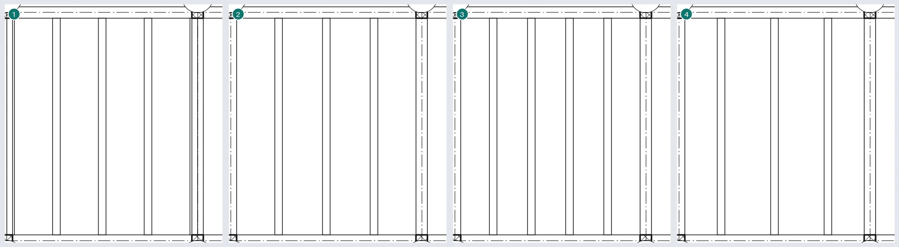
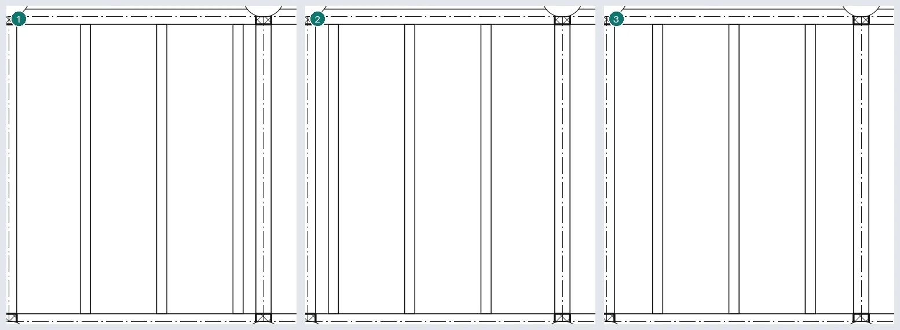
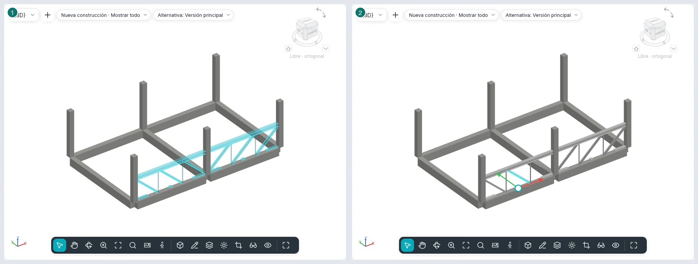
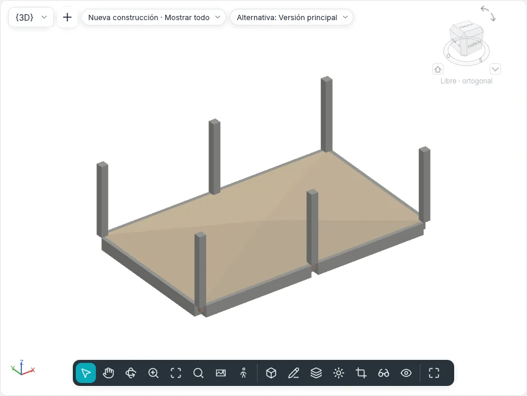
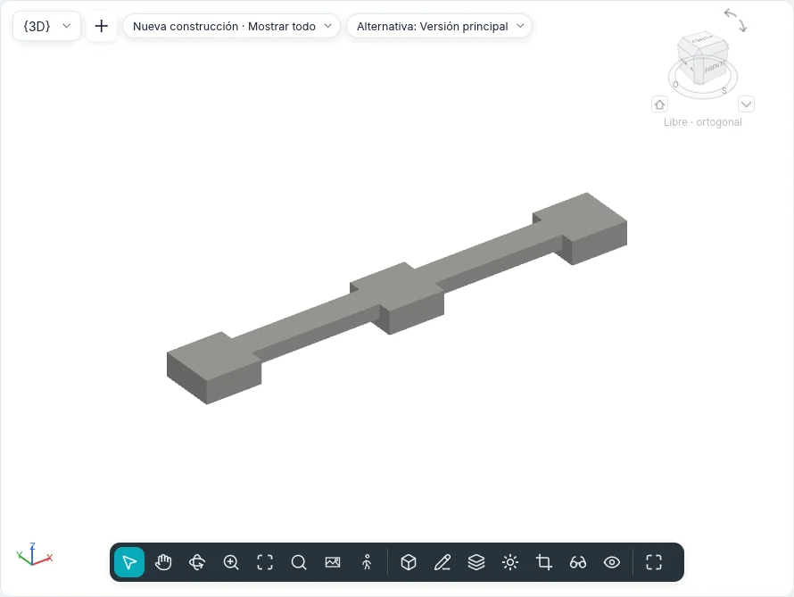
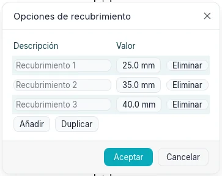
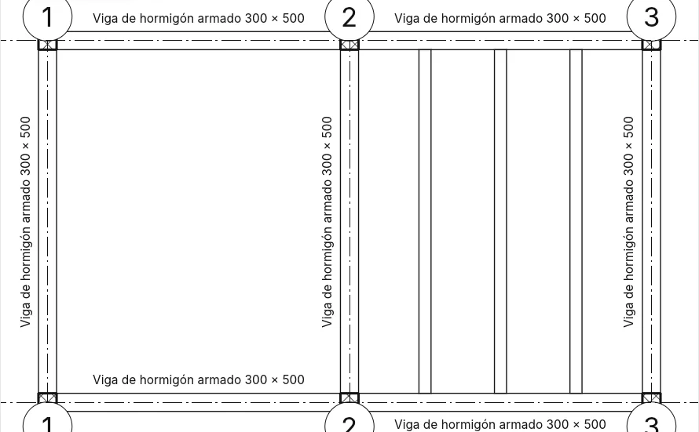

Estructura y cimentaciones
La ficha Estructura (en el estilo BIMopen: Crear ▸ Estructura) reúne los elementos que sostienen el edificio: vigas, arriostramientos, entramados de vigas, cerchas, muros y forjados estructurales, pilares estructurales, zapatas aisladas, zapatas corridas y losas de cimentación. Las vigas, los arriostramientos y las barras de las cerchas son una sola categoría, Armazón estructural; las zapatas aisladas, las zapatas corridas y las losas de cimentación son Cimentaciones estructurales. Las mismas herramientas funcionan en las plantas, las secciones, los alzados y las vistas 3D, donde la vista lo permite.
Tipos de armazón estructural
Los tipos de viga y de arriostramiento son secciones paramétricas de BIMopen, como las de los pilares estructurales. Forma de sección elige la forma: Rectangular (hormigón o madera), Circular, Doble T (también con alas desiguales y alas inclinadas), Perfil tubular rectangular, Perfil tubular circular, Angular, Perfil en C (también con labio) y Perfil en T. Parámetros de tipo muestra solo las cotas de la forma elegida y calcula, de solo lectura, las propiedades de Análisis estructural: área, perímetro pintable, peso nominal (a partir de la densidad del material), momentos de inercia, módulos elásticos y plásticos, constantes de torsión y de alabeo, áreas de cortante y ángulo de los ejes principales. Clave de nombre de sección conserva el nombre del perfil comercial.
Un proyecto nuevo tiene vigas de hormigón armado, los perfiles IPE, HEA, HEB, UPN, angulares, en T, tubulares y vigas de madera laminada encolada.
Viga
Estructura ▸ Viga abre la ficha Colocar viga. Dos clics hacen una viga: los extremos se enganchan al centro de los pilares estructurales, al eje de los muros portantes, a los extremos y a la línea de otras vigas y a las intersecciones de las rejillas, y la barra de estado dice a qué. La barra de opciones tiene:
| Opción | Qué hace |
|---|---|
| Plano de colocación | El nivel de la vista, sobre el que se apoya la viga |
| Uso estructural | |
| Forzado 3D | Los extremos se enganchan a los elementos estructurales fuera del plano de trabajo: una viga inclinada |
| Encadenar | El final de una viga es el inicio de la siguiente; Esc termina la cadena |
| Etiquetar al colocar | Cada viga nace con su etiqueta |
Múltiple ▸ En rejillas: haz clic en las rejillas y en Fin (o Enter); en cada rejilla nace una viga por vano entre los apoyos que la cruzan. Un muro que está sobre la rejilla no recibe vigas; las vigas que ya existen no se duplican.
En una sección o en un alzado la viga se dibuja en el plano de la vista, con los extremos sobre los elementos estructurales pulsados; en 3D sobre el nivel bajo el cursor, o con Forzado 3D sobre el elemento.
Propiedades de la viga
| Grupo | Propiedades |
|---|---|
| Restricciones | Nivel de referencia, Plano de trabajo, Desfase de nivel inicial y Desfase de nivel final (una viga inclinada), Orientación (Normal, Horizontal), Rotación transversal |
| Posición geométrica | Extensión inicial/Extensión final (extremos libres), Retroceso de unión inicial/Retroceso de unión final (extremos unidos, acero y madera), Justificación YZ (Uniforme o Independiente), Justificación Y/Justificación Z con su Valor de desfase, también para el inicio y el final |
| Materiales y acabados | Material estructural |
| Estructural | Uso estructural, Posición del símbolo de barra, Tipo de enlace inicial/final, Distancia de enlace inicial/final y pilar de referencia (superior o inferior) para cada extremo, Conexión inicial/Conexión final (Pórtico resistente a momentos, Momento en voladizo), Contraflecha, Número de montantes, Viga apoyada al inicio/al final sobre un muro estructural, Peso máximo, Peso exacto, Área pintada |
| Cotas | Longitud del sistema, Longitud de corte, Volumen, Elevación en la parte superior y Elevación en la base («Varía» en una viga inclinada) |
| Análisis estructural | Liberación inicial/Liberación final (Empotrado, Articulado, Momento flector, Definido por el usuario con las seis restricciones), Analizar como |
Una viga seleccionada tiene Invertir extremos y, para cada extremo, No permitir unión.
Cómo se ve
- Bajo: una línea, con el estilo de línea de su uso (Estilos por categoría ▸ Armazón estructural ▸ Viga principal, Vigueta, Correa…), separada de los pilares y de las vigas que une por la Distancia del símbolo de corte. En sección y en alzado las vigas también son líneas, con los símbolos de momento.
- Medio y Alto: el contorno de la sección. En una planta con Disciplina «Estructural» las vigas cubiertas por un forjado se dibujan a trazos; en una planta «Arquitectura» no se ven.
- En sección la viga se corta con el patrón de su material.
Uniones
Una viga se detiene en la cara del pilar y del muro portante sobre los que apoya (nunca en un muro no portante); entre vigas la unión es en T (la viga que pasa queda entera) o en esquina entre dos vigas del mismo tipo en el mismo plano. El hormigón se convierte en una sola masa: el pilar prevalece sobre la viga, los forjados y los muros mantienen su forma, y una viga bajo un forjado de hormigón se detiene en su cara inferior.
Estructura ▸ Armazón ▸ Uniones viga/pilar muestra una flecha en cada extremo unido: hacia la unión, esa viga está cortada; un clic la invierte. La barra de opciones filtra por material (Acero, Madera, Hormigón prefabricado, Otros).
Arriostramiento
Estructura ▸ Arriostramiento:
- en un Alzado de estructura (o en una sección), dos clics sobre elementos estructurales, por ejemplo la base de un pilar y una viga;
- en planta, con Nivel inicial, Desfase, Nivel final, Desfase de la barra de opciones;
- en 3D, sobre los puntos de los elementos pulsados.
Un extremo apoyado en una viga queda asociado a una Proporción (de 0 a 1) o a una Distancia a lo largo de ella, desde el inicio o desde el final: si la viga se desplaza o se alarga, el arriostramiento la sigue. Uso estructural: Arriostramiento vertical, Jabalcón, Alma, Otros.
Símbolos en planta y Configuración estructural
Estructura ▸ Armazón ▸ Configuración estructural fija, sobre el papel:
- la Distancia del símbolo de corte de arriostramientos, vigas y cerchas, pilares;
- los Símbolos de arriostramiento: Línea paralela (con su desfase) o Línea con ángulo, Mostrar arriostramiento superior y Mostrar arriostramiento inferior (también a trazos), Símbolo de jabalcón;
- los Símbolos de conexión de vigas y arriostramientos.
Los símbolos se ven con el nivel de detalle Bajo.
Entramado de vigas
Estructura ▸ Entramado de vigas llena un vano de vigas paralelas:
- Entramado de vigas automático: un clic en un vano cerrado por vigas o muros portantes;
- Bocetar entramado de vigas: el contorno en el modo boceto (Crear contorno del entramado) con Designar apoyos (el contorno queda ligado a las vigas y a los muros pulsados, y el primero da la dirección), Línea, Rectángulo, Seleccionar líneas y Dirección de viga. Un bucle interior es una abertura.
Regla de disposición: Distancia fija, Número fijo, Separación máxima, Separación libre; con la primera y la última, Justificación (Inicio, Final, Centro, Línea de dirección). Tipo de viga, Elevación y Etiquetar al colocar (una etiqueta del entramado o una por viga) completan las opciones.
Las vigas siguen a los apoyos cuando se desplazan. Un entramado seleccionado tiene Restablecer sistema (las vigas modificadas vuelven al entramado) y Eliminar entramado (el entramado desaparece, las vigas quedan).
Las reglas de distribución espacian las vigas como Matriz espacia sus copias: Número fijo como Último, Distancia fija como 2° desde la Justificación; con Separación libre la distancia se mide entre las caras, y una viga de un tipo mayor aparta a sus vecinas. 3D en la barra de opciones hace el sistema no plano: los extremos de las vigas suben a los soportes que definen la pendiente (las vigas siempre, los muros con Define pendiente o Muros de inclinación definida). Editar contorno vuelve a abrir el boceto; Dirección de viga se dibuja o se elige con Seleccionar líneas. Una viga eliminada a mano sigue eliminada hasta Restablecer sistema. Fuera de un vano cerrado, Entramado de vigas automático abre el boceto del contorno.


Un sistema de vigas copiado, reflejado o pegado se asocia a las vigas y muros portantes sobre los que caen sus bordes en el nuevo lugar; si un borde no encuentra apoyo, el comando avisa, y Editar contorno ▸ Designar apoyos lo vuelve a asociar. Cópielo solo entre vanos de la misma forma y los mismos apoyos.
Las vigas curvas y los muros portantes curvos también cierran un vano para un sistema de vigas automático, pero la dirección de las vigas siempre viene de un apoyo recto. Un sistema de vigas dibujado sobre más de un vano se crea igualmente, con un aviso: las vigas y muros que lo atraviesan no lo dividen, por eso es mejor un sistema por vano.
Cercha
Estructura ▸ Cercha: dos clics en planta extienden el esquema del tipo (Pratt, Howe, Warren, Warren con montantes, Fink) sobre la luz. Los cordones son vigas, las almas son arriostramientos, cada uno del tipo de su grupo (Cordones superiores, Almas verticales, Almas diagonales, Cordones inferiores). Las propiedades incluyen Altura de cercha, Cordón portante, Anchura máxima de panel, Número de paneles y la rotación.
Una cercha seleccionada tiene Enlazar parte superior/inferior (el cordón sigue la cara de una cubierta o de un forjado estructural; con Shift el cordón inferior), Desenlazar superior/inferior, Restablecer cercha y Eliminar cercha (las barras quedan como vigas y arriostramientos).
Editar perfil abre una sección o un alzado paralelo a la cercha (si la vista abierta no lo es, Ir a vista pregunta cuál) con las líneas de los cordones en modo boceto: las líneas por encima de la mitad son el cordón superior, las demás el inferior, y las barras del alma los siguen. Restablecer perfil devuelve los cordones a la línea del esquema. En una vista 3D las líneas se dibujan directamente en el plano de la cercha, sin cambiar de vista.
Con Seleccionar líneas la cercha se coloca a lo largo de una viga, un muro o una rejilla. Un clic en una barra selecciona toda la cercha; Tab pasa a la barra sola. Un cordón enlazado sigue la cara del anfitrión en toda la luz; con el cordón portante enlazado, el otro mantiene la Altura de cercha desde él, y el perfil dibujado se conserva y vuelve con Desenlazar superior/inferior. Justificación vertical portante, Desfase no portante, Orientación del alma (Ortogonal: los montantes a escuadra con el cordón portante) y Ángulo de rotación (el plano de la cercha gira alrededor de la línea de ubicación) cambian las barras. Una barra eliminada a mano sigue eliminada hasta Restablecer cercha; las barras se recortan solo en Configuración estructural. Los esquemas nuevos dibujados en su propio componente llegarán con el editor de componentes.

Con Las almas presentan símbolos de corte en el tipo de cercha, con nivel de detalle bajo las almas se detienen antes de los cordones, a la Distancia del símbolo de corte de las riostras de la Configuración estructural.
Muro estructural y forjado estructural
Muro estructural es la herramienta Muro con los mismos tipos y la misma barra de opciones: el muro nace Portante. Cada muro tiene Estructural y Uso estructural (No portante, Portante, Muro de cortante, Estructural combinado).
Forjado estructural es el suelo con Estructural marcado. En el boceto, Dirección de luz dibuja la dirección de su luz; al terminar, el Símbolo de dirección de luz nace en el centro del forjado. Anotaciones ▸ Dirección de luz lo vuelve a colocar (con Colocación automática en el centro); seleccionado se gira, y Alinear perpendicular lo hace perpendicular a un borde, a una viga o a una rejilla.
Edición de forma
Un suelo seleccionado (estructural, una losa de cimentación o cualquier suelo) tiene el grupo Edición de forma:
- Modificar subelementos: haga clic en una esquina o un punto y escriba su Elevación en la barra de opciones; Del quita el punto.
- Añadir punto: un punto dentro del suelo a la elevación indicada; con Relativa se suma a la altura de la superficie en ese punto.
- Añadir línea de división: dos clics; la superficie se pliega a lo largo de la línea.
- Designar soportes: haga clic en una viga bajo el suelo; una línea de división sigue la viga, en su cara superior.
- Restablecer forma: quita puntos y líneas; el suelo vuelve a ser plano (o conserva su pendiente).
La cara superior pasa a ser la superficie triangulada que pasa por esos puntos; toda la losa la sigue y conserva su espesor. Elevación en parte superior y Elevación en base muestran entonces Varía.

Cimentaciones
| Herramienta | Cómo funciona |
|---|---|
| Zapata aislada | Un clic en planta o en 3D (barra espaciadora: girar), o bien En rejillas o En pilares y Fin. La cara superior está en el nivel más el Desfase de altura desde nivel; el pilar de encima se apoya en la zapata. Desplazar con rejillas la liga a las rejillas |
| Zapata corrida | Un clic sobre un muro estructural: la zapata corre bajo su base y lo sigue. Portante: Anchura y Excentricidad; Contención: Anchura del lado exterior y Anchura del lado interior. Se interrumpe bajo las puertas y ventanas que tocan la base, salvo con No interrumpir en las inserciones; en los extremos libres sobresale la Longitud por defecto de extensión final |
| Losa de cimentación | El contorno en el modo boceto (Crear contorno de la losa de cimentación), como un suelo: está bajo su nivel, más abajo el grosor de sus capas. Uso estructural: Cimentación o Solera de cimentación |
Con una zapata corrida seleccionada, los círculos rellenos de sus extremos la alargan o acortan a lo largo del muro, con forzado a las referencias cercanas; los círculos de los extremos de una viga o una riostra hacen lo mismo. En vigas de acero, hormigón prefabricado y madera, las flechas más allá de los extremos cambian Extensión inicial/final en un extremo libre y Retroceso de unión inicial/final en uno unido. Las zapatas aisladas y corridas de hormigón que se tocan forman una sola masa: la zapata aislada conserva su forma y corta la corrida (de dos zapatas aisladas, la anterior corta a la otra), y en planta no se dibuja la línea entre ellas.


Recubrimiento de armadura
Hormigón armado ▸ Opciones de recubrimiento lista los recubrimientos del proyecto, cada uno con nombre y distancia: Añadir, Duplicar, Eliminar. Los elementos que usaban un recubrimiento eliminado toman el primero. Muros estructurales, pilares, vigas y arriostramientos de hormigón, forjados estructurales, losas de cimentación, zapatas aisladas y corridas eligen su recubrimiento en Propiedades: Recubrimiento de armadura - Cara superior, Recubrimiento de armadura - Cara inferior y Recubrimiento de armadura - Otras caras (en los muros Recubrimiento - Cara exterior, Recubrimiento - Cara interior y Recubrimiento de armadura - Otras caras).

Vistas, etiquetas, tablas de planificación e IFC
- Disciplina de una vista: Arquitectura o Estructural. La segunda oculta los muros no portantes y dibuja a trazos lo que cubren los forjados.
- Anotaciones ▸ Etiquetas de vigas: etiquetas de armazón y elevaciones en todas las vigas de la planta (o en las seleccionadas) en seis posiciones, encima y debajo, al inicio, en el centro y al final; Mostrar elevación elige superior, inferior, ambas o real.
- La etiqueta de una viga se lee a lo largo de la viga y se coloca a su lado, en el lado donde no tapa otra viga (encima, si ambos están libres); se arrastra como cualquier etiqueta. En Etiquetas de vigas ▸ Configuración, Desfase horizontal en extremos acerca al centro las posiciones de inicio y final, y Desfase vertical aleja las anotaciones del lateral de la viga.
- Tabla de planificación/cantidades tiene las categorías Armazón estructural, Entramados de vigas, Cerchas y Cimentaciones estructurales, con todos los parámetros como campos.
- En IFC las vigas principales, viguetas y correas salen como
IfcBeam, los arriostramientos y las barras comoIfcMember, las cerchas comoIfcElementAssembly, las zapatas aisladas y corridas comoIfcFooting, la losa de cimentación comoIfcSlabde base; los muros y forjados estructurales llevanLoadBearing.

Desde la línea de comandos
| Comando | Qué hace |
|---|---|
beam |
Vigas desde dos puntos, encadenadas, en arco o en rejillas |
brace |
Un arriostramiento entre dos puntos |
beamsystem, beamsystemedit |
Un entramado automático o desde un contorno; restablecerlo o eliminarlo |
truss, trussedit |
Una cercha; enlazarla, desenlazarla, restablecerla o eliminarla |
pad, strip |
Zapatas aisladas (en un punto, en rejillas, en pilares), zapatas corridas |
spansymbol, spanalign |
El símbolo de dirección de luz; alinearlo |
beamjoin, structuralsettings, beamannotations |
Las uniones, la configuración estructural, las etiquetas de vigas |
floorshape |
La edición de forma de un suelo: puntos, líneas de división, soportes, restablecer |
covers |
Parámetros de recubrimiento |